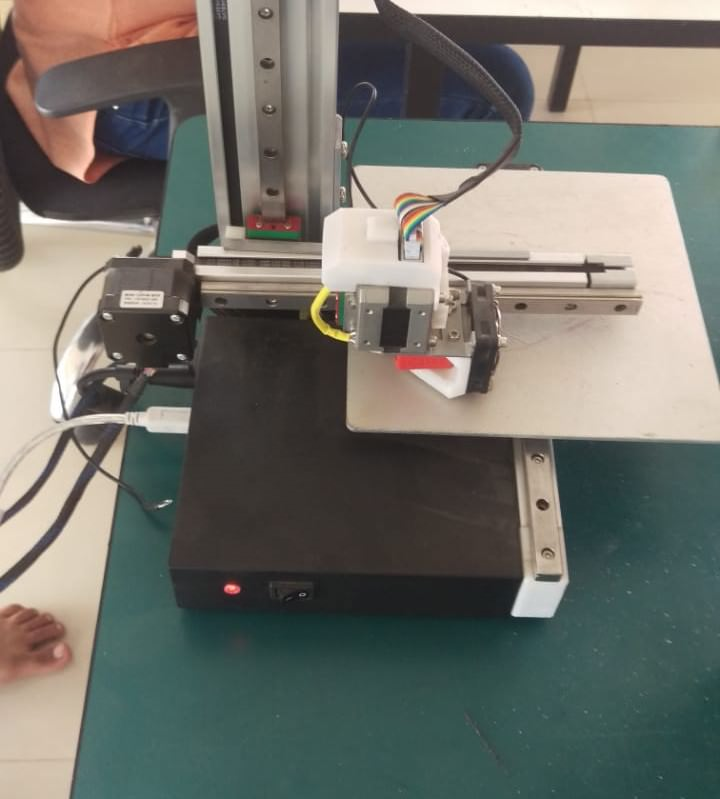
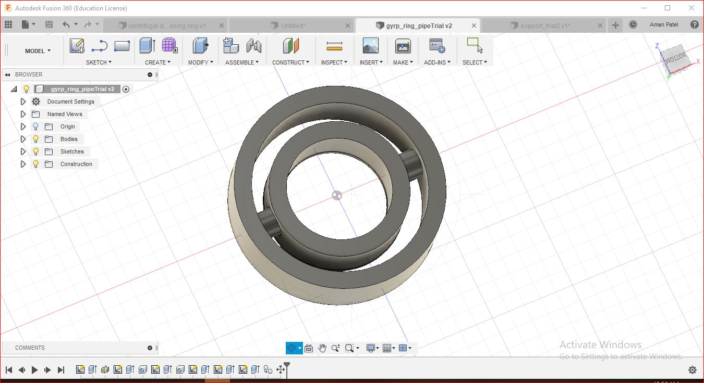

In this week we were supposed to design and print something which has to be done by Additive manufacturing only.
(Additive manufacturing- the process in which the product or any model is made by add of layer one by one, step by step and there is no cutting involved in the whole process)
Software needed for 3D designing and Printing.(Download Link given)
-CAD software for 3D designing: Fusion 360. (You have to make a student account for availing 3 years permission)
-3D slicing the model for UltiMaker:Cura.
-3D slicing the model for Cetus:UpStudio
Day-1
-In the morning there was a session conducted by Rutuja patel on basic parameters of our 3D printer(Ultimaker 2).
In this session i learnt about the limitations of printer, what is overhanging, infill speed and density, minimum layer height,etc.
Then we printed a makerbot robot for sample object test of printing.
After that we started doing research for our task.
Day-2
After one and a half day of researching on more than 50 sites and surfing internet i ended up doing 12 sketches of what i wanted to make or what i found interesting that can be done by additive manufacturing.
-Many of my projects were based on different moving mechanism as i have more liking towards it.
-I made few sketches of project to test the angle capacity of printer and challenges faced by me while designing.
-In the evening i got discussion from my mentor Tapan betai. In which i explained him all the objects i sketched and how will i do it and what is my aim behind making that.
-He selected few models for me to test different objectives.
-I took one projects file from internet to observe the tolerances and designing of the model.
-Afterwards i started designing my other model which i named it collapsable sticks. (the mechanism is usually used in security gates, or for fencing).
-I designed the collapsable model in Fusion 360. Steps followed by me in making this are as followa.
Step:1
-First i made a rectangle with the measurements i wanted. Made two screws which was then used in connecting sticks.Extruded both of them.
Step:2
-Then i copied them and made multiple of it.
Step:3
-I rotated it and brought them in my required angle(60*) between the two sticks.
Step:4
-Then the rectangular bars were looking very heavy so i used the tapered function from “MODIFY” and tapered the bar at 5 degree and 35mm length.
-I have kept space between all the surfaces of "0.2mm" as the supports are to be broken after the printing is done. And if the distance between two surface is less than 0.2mm then it will stick with each other.
- I found this measurement while going through the website of Fabacademy Archive. You can find it here.
Day-3
I did some correction in the file and then started the printing in CETUS printer.Parameters for the print are listed below
Height
0.2 mm
Speed
150 mm/s
Suppport
Everywhere
Infill
20%
-The software for slicing the model for cetus is UpStudio.
-After starting of print we found that the bed of printer was not calibrated nd because of that the bed got little damaged.

-I did the calibration with the help of Tapan sir and then i started the print.
-The model i designed in the software was big in size so it was not fitting in the proportion with the bed of cetus. I scaled down the model by 70% to bring it in the size of printer's bed.
-This was a major failure. All the joints and the support got glued and the designed became rigid.
-Then i printed the other design for checking of tolerences. This design was taken ready from the web.
-Parameters for printing:
Infill
10%
Layer height
0.2 mm
Speed
100 mm/s
Suppport
Everywhere(Default)
Brim
Null
Printing
-But while breaking the support between two balls the stick break off.
-This print was also a failure.
Day-4
I designed the model again with smaller dimension to test the joints and movements of the model.This time i did the print in Ultimaker2.
-As i kept the design for print it stopped within the first two base layer the printer stopped due to error of Bed level heating sensor.
Parameters:
Infill
20%
Layer height
0.2 mm
Speed
100 mm/s
Suppport
Everywhere(Default)
Brim
Yess
-I fixed the problem and kept the print again and this time it was completed successfully. The model was working in motion as per designed.
-This print had one error in design that i forgot to add cap/stopper on the connecting pin so the sticks went loose while in motion.
Day-5
I started my final design that was Gyroscopic rings in Fusion 360.
The steps i followed are shown below.
Step:1
Select a plane which you want to work in. I choose horizontal plane because that's the most sufficient plane to work on with any object.
Step:2
Draw a circle with 100mm diameter.(shortcut key:- "c"
Offset the circle with 7mm of distance.(shortcut key:- "o")
Follow the same step for the number of rings you want to make.
Step:3
Now choose the Extrude command (Shortcut key:- "e") and then select alternate paths which will in result form rings.
The Extruded model will look something like this
-I used the fillet function here to make the edges of rings smooth.
-Then i made holes on the surface of rings and fixed cylinder to the opposite surface such that the end of cylinder goes into the hole opposite to it. By this the rings will rotate about the cylinder.
-This is how it looks after making all the holes and cylinder.
Step:4 (Execution Starts)
-Before printing the big ring i trimmed it to two rings and reduced the size and printed it so that i can get idea of dimensions.
-Below you can see the printed object
-Parameters:
Infill
15%
Layer height
0.2 mm
Speed
100 mm/s
Suppport
Everywhere
-The print was good and the gyro was rotating well but there was a failure. The inner ring got detached from the outer one and the shaft holding got bent.
Step:5
-After the small print i printed the original one.
-Design Parameters:
Hole for cylinder(depth)
5 mm
cylinder length
2.5 mm
-Printing Parameters:
Infill
15%
Layer height
0.15 mm
Print Speed
55 mm/s
Travek speed
100 mm/s
Brim
No
-But this ring was also a design FAILURE.
-I kept the shaft length less to keep it safe from getting stick to the other surface but the length was very less that the ring fell off from the joint.
Step:6 (Design Study)
-After so many failures of such interesting design which i made i was little frustrated. But then i reopened my software and started designing the model from start with two layer rings.
-I kept the gap between the end of cylinder and the wall of Hole - "0.2mm" and changed the offset of the ring from 5mm to 7mm to maintain proper strength.
-I found this dimension while going through a site of student from Fabacademy. You can find it Here.

-Now was the time to print this semifinal design.
-Parameters:
Infill
30%
Layer height
0.15 mm
Print Speed
50 mm/s
Travel Speed
60 mm/s
Support
Everywhere
-I got almost 80% success in this print. But the second ring beign in air its finish was not good due to self generated supports
-For solving this issue there was only one way, i.e building up manual supports in design itself.
-So i started research for the method to make manal support.
-You can find the link here
-And i came up with the idea which gave me following result.
-Almost spent whole day for research and different trials and finally the last one was successful.
Step:7
-Added this support design in the final print.
-Finally i was successful in the Gyroscope ring design and printing. The surfacr finish was excellent.
-Parameters:
 -I took one projects file from internet to observe the tolerances and designing of the model.
-Afterwards i started designing my other model which i named it collapsable sticks. (the mechanism is usually used in security gates, or for fencing).
-I designed the collapsable model in Fusion 360. Steps followed by me in making this are as followa.
-I took one projects file from internet to observe the tolerances and designing of the model.
-Afterwards i started designing my other model which i named it collapsable sticks. (the mechanism is usually used in security gates, or for fencing).
-I designed the collapsable model in Fusion 360. Steps followed by me in making this are as followa.
 -The model i designed in the software was big in size so it was not fitting in the proportion with the bed of cetus. I scaled down the model by 70% to bring it in the size of printer's bed.
-This was a major failure. All the joints and the support got glued and the designed became rigid.
-Then i printed the other design for checking of tolerences. This design was taken ready from the web.
-Parameters for printing:
-The model i designed in the software was big in size so it was not fitting in the proportion with the bed of cetus. I scaled down the model by 70% to bring it in the size of printer's bed.
-This was a major failure. All the joints and the support got glued and the designed became rigid.
-Then i printed the other design for checking of tolerences. This design was taken ready from the web.
-Parameters for printing:
 -This print had one error in design that i forgot to add cap/stopper on the connecting pin so the sticks went loose while in motion.
-This print had one error in design that i forgot to add cap/stopper on the connecting pin so the sticks went loose while in motion.
 The Extruded model will look something like this
-I used the fillet function here to make the edges of rings smooth.
-Then i made holes on the surface of rings and fixed cylinder to the opposite surface such that the end of cylinder goes into the hole opposite to it. By this the rings will rotate about the cylinder.
-This is how it looks after making all the holes and cylinder.
The Extruded model will look something like this
-I used the fillet function here to make the edges of rings smooth.
-Then i made holes on the surface of rings and fixed cylinder to the opposite surface such that the end of cylinder goes into the hole opposite to it. By this the rings will rotate about the cylinder.
-This is how it looks after making all the holes and cylinder.
 -I got almost 80% success in this print. But the second ring beign in air its finish was not good due to self generated supports
-For solving this issue there was only one way, i.e building up manual supports in design itself.
-So i started research for the method to make manal support.
-You can find the link here
-And i came up with the idea which gave me following result.
-Almost spent whole day for research and different trials and finally the last one was successful.
-I got almost 80% success in this print. But the second ring beign in air its finish was not good due to self generated supports
-For solving this issue there was only one way, i.e building up manual supports in design itself.
-So i started research for the method to make manal support.
-You can find the link here
-And i came up with the idea which gave me following result.
-Almost spent whole day for research and different trials and finally the last one was successful.